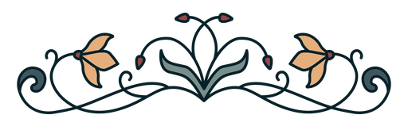

Categories
|
Games |
|
|
 |
Ilmalaiva Release date: 2023.07.07 Framework:
Simple arcade game built on premise of keeping airship afloat by constantly delivering
fuel to its engine. Each few times you delivered the fuel you could earn some boost to
help you with the task. |
|
Near Risk of Death Release date: 2023.06.06 Framework:
Post-apocalyptic roleplaying game utilising Nim's Nigui framework,
created together with skeletontonguedworld who made art for all locations. |
|
|
Between Shadows and Light Release date: 2018.07.19 Languages: Framework:
First somewhat bigger game, yet still written in terminal and using fairly
primitive Python code. |
|
|
Temple Settlers Release date: 2018.03.20 Languages: Framework: Town-building terminal game written in Python. Starting from mere resource gathering, you could expand the town to gather more resources or enable new features. Eventually, all of that was meant to prepare town for next waves of attacks - once the final attack is defeated, the game is won, allowing you to turn it into sandbox mode. |
|
|
WarCards Release date: 2018.03.12 Languages: Framework: First game project I made, being simple terminal cardgame written in Python. You drafted one of three warrior cards and could enhance your deck or play it. Depending on your decisions, you could survive the opponent's attack or not, in latter case your health was depleted. |
|